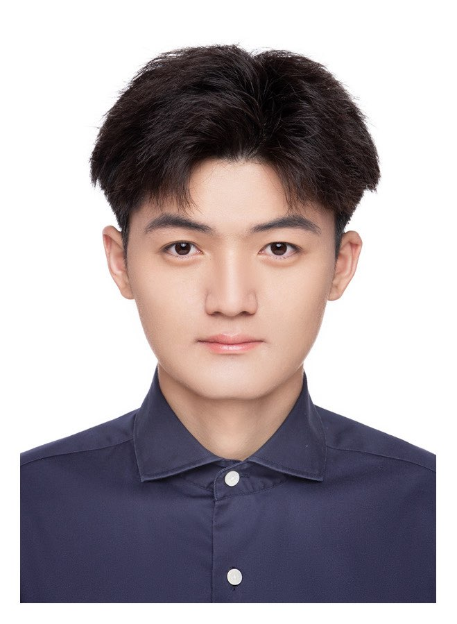
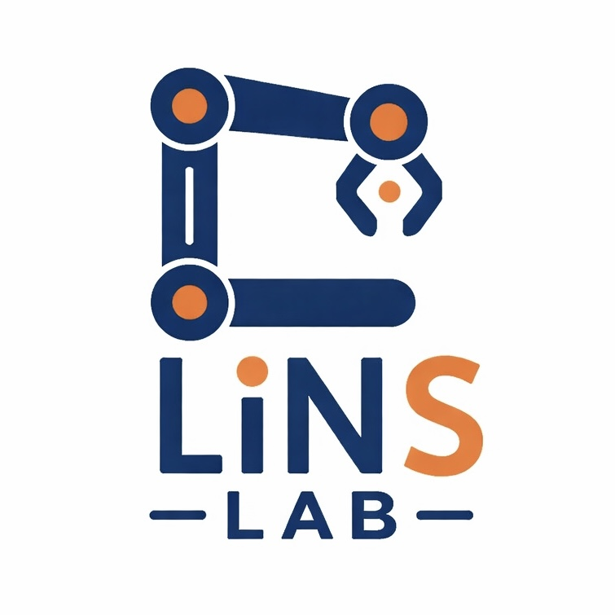
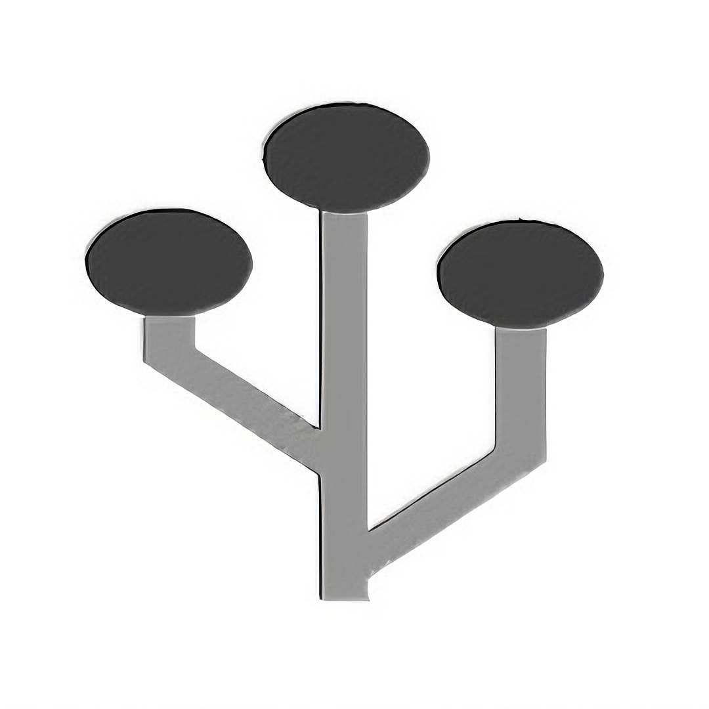
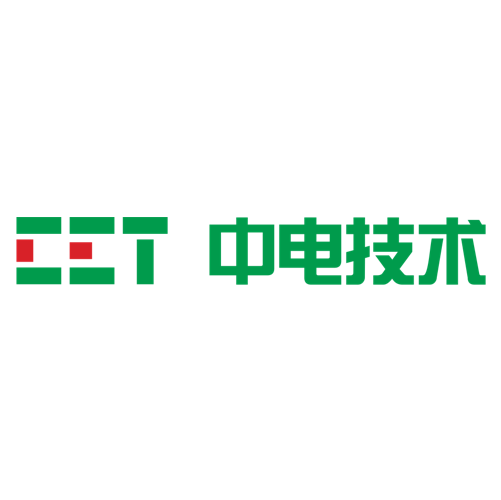

|
Xuanwei Liu | 刘轩伟 I am an Undergraduate student in Automation at the Harbin Institute of Technology, Shenzhen (HITSZ). I am currently advised by Prof. Lin Shao at the NUS LinS Lab and Prof. Yongquan Chen at AIRS. Previously, I was a research assistant at the Piecewise Affine Learning & Control Lab, advised by Prof. Jun Xu. In Fall 2026, I will join NUS as an incoming M.Sc. student in Robotics. |
 |
{kind=link}
News (To be supplemented) |
Research (To be supplemented)My research interest focus on Robotics. |
Education
National University of Singapore, Singapore
2026.08 - 2027.01(Expected)
Master of Robotics (NUS)
Harbin Institute of Technology, Shenzhen, China
2022.09 - 2026.07(Expected)
B.Eng. in Automation
GPA: 88.35/100
|
Experience
Learning and Intelligence Systems Lab (Lins Lab), NUS, Singapore
2025.12 - Present
Research Assistant
Advisor: Prof. Lin Shao

Piecewise Affine Learning & Control Lab (Pwalclab), HITSZ, China
2025.06 - 2025.09
Research Assistant
Advisor: Prof. Jun Xu
University of Oxford, Oxford, UK
2024.08
LMH Summer Programme in Machine Learning and Artificial Intelligence
Fully funded (A+)
|
Employment
Shenzhen Institute of Artificial Intelligence and Robotics for Society (AIRS)
2025.11 - Present
Dexterous Manipulation Research Intern
Advisor: Prof. Yongquan Chen

CET Electric Technology Inc (CET), Shenzhen, China
2025.01 - 2025.03
AI Software Intern
|
Awards
|
MiscellaneousOutside the lab, I enjoy immersing myself in music🎵, photography📷, and exploring the outdoors🪂.
|
|
This homepage is designed based on Jon Barron's website. |